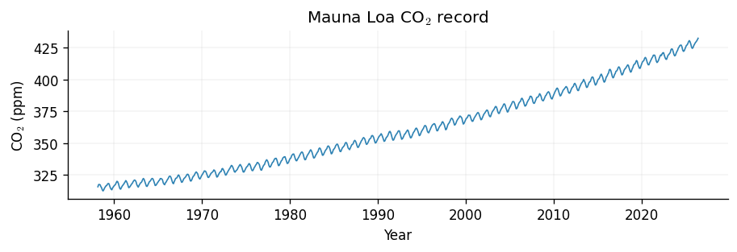
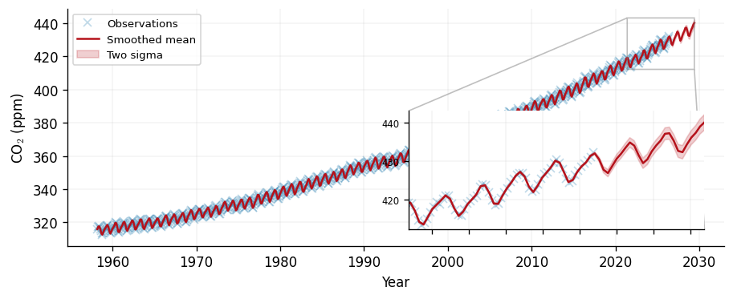
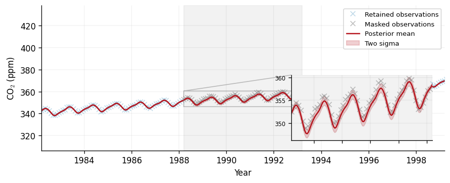
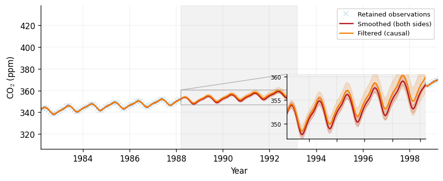
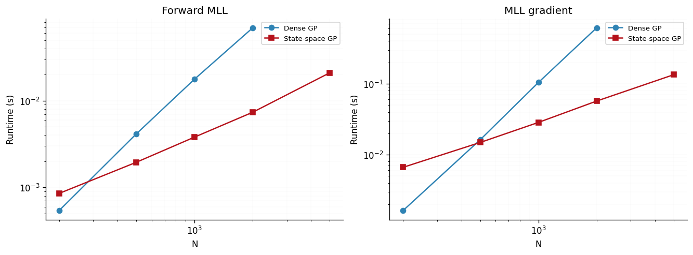

State-Space (Markovian) Gaussian Processes
A Gaussian process whose inputs lie on the real line e.g., a time axis, can often be rewritten as the solution of a linear stochastic differential equation (SDE). When that rearrangement exists, inference no longer needs the dense \(\mathcal{O}(N^3)\) Cholesky factorisation of the Gram matrix, as seen in our Regression Notebook Instead a forward Kalman filter and backward smoother can be used to estimate an identical posterior in \(\mathcal{O}(N)\) time. For long, one-dimensional temporal data this turns a cubic problem into a linear one.
In this notebook we use the gpjax.state_space module to model the Mauna Loa
atmospheric CO\(_2\) record. We:
- build a state-space prior from a sum of Matérn and periodic kernels,
- fit its hyperparameters and form the smoothed posterior,
- fill a held-out gap with the
observation_maskargument, - contrast the smoothed posterior with the causal (filtered) one, and
- confirm empirically that inference scales linearly in \(N\).
# Enable Float64 for more stable matrix factorisations.
from examples.utils import clean_legend, use_mpl_style
import jax
from jax import config
import jax.numpy as jnp
import jax.random as jr
from jaxtyping import install_import_hook
import matplotlib as mpl
import matplotlib.pyplot as plt
import pandas as pd
config.update("jax_enable_x64", True)
with install_import_hook("gpjax", "beartype.beartype"):
import gpjax as gpx
from gpjax.state_space import (
StateSpacePrior,
TruncatedPeriodic,
fit_scipy,
)
key = jr.key(123)
# set the default style for plotting
use_mpl_style()
cols = mpl.rcParams["axes.prop_cycle"].by_key()["color"]
Gaussian processes as stochastic differential equations
A Markovian Gaussian process is one whose value at time \(t\), augmented with a finite number of its derivatives, forms a state vector \(\boldsymbol{s}(t) \in \mathbb{R}^d\) that evolves under a linear SDE
where \(\boldsymbol{\beta}(t)\) is a Wiener process and \(\mathbf{H}\) reads the function value off the state. The observations are \(y_i = f(t_i) + \varepsilon_i\) with \(\varepsilon_i \sim \mathcal{N}(0, \sigma^2)\). The Matérn kernel family admits an exact representation of this form Hartikainen and Särkkä (2010) whereby the state dimension is \(d = 1, 2, 3\) for the Matérn-1/2, 3/2 and 5/2 kernels respectively. Periodic structure is captured to arbitrary accuracy by a truncated harmonic expansion Solin and Särkkä (2014), and sums of these kernels simply stack their states.
Because the process is Markovian, the marginal log-likelihood and the posterior are computed by a forward Kalman filter followed by a backward Rauch–Tung–Striebel (RTS) smoother. Each step manipulates \(d \times d\) matrices, so the whole sweep costs \(\mathcal{O}(N d^3)\) — linear in the number of observations, against the dense path's \(\mathcal{O}(N^3)\). For a complete reference on this construction, see Solin and Särkkä (2019)
Two structural caveats follow from requiring a finite state. The RBF kernel
has no exact finite-dimensional state (its SDE is infinite order), and kernel
products would multiply state dimensions in a way gpjax.state_space does
not currently support. The expressible building blocks are, therefore, Matérn-1/2,
3/2, 5/2, TruncatedPeriodic, and sums of these.
The Mauna Loa CO\(_2\) record
We load the monthly mean CO\(_2\) concentration measured at the Mauna Loa Observatory in Hawaii. The series has a clear upward trend and a strong annual cycle — exactly the trend-plus-seasonality structure that a sum kernel can describe. We shift the time axis to start at zero (so lengthscales read in years) and centre the targets (so a constant mean function suffices). A comparative approach to modelling this data using traditional GP models may be found in our Introduction to Kernels notebook.
co2_data = pd.read_csv(
"https://gml.noaa.gov/webdata/ccgg/trends/co2/co2_mm_mlo.csv", comment="#"
)
co2_data = co2_data.loc[co2_data["average"] > 0]
time_years = co2_data["decimal date"].values
co2_ppm = co2_data["average"].values
t0 = time_years.min()
y_mean = co2_ppm.mean()
x = (time_years - t0).reshape(-1, 1)
y = (co2_ppm - y_mean).reshape(-1, 1)
D = gpx.Dataset(X=x, y=y)
fig, ax = plt.subplots(figsize=(7.5, 2.5))
ax.plot(x + t0, y + y_mean, color=cols[0], linewidth=1)
ax.set(xlabel="Year", ylabel="CO$_2$ (ppm)", title="Mauna Loa CO$_2$ record")
[Text(0.5, 0, 'Year'),
Text(0, 0.5, 'CO$_2$ (ppm)'),
Text(0.5, 1.0, 'Mauna Loa CO$_2$ record')]

Building the model
We compose three kernels by summation:
- a long-lengthscale
Matern52for the slow upward trend, - a
TruncatedPeriodicwith a one-year period for the seasonal cycle, and - a short-lengthscale
Matern32for medium-scale wiggles.
The only structural difference from a dense GPJax model is the prior where we
replace gpx.gps.Prior with StateSpacePrior. Everything else is the
usual GPJax API.
trend_kernel = gpx.kernels.Matern52(lengthscale=20.0, variance=100.0)
seasonal_kernel = TruncatedPeriodic(
lengthscale=1.0, variance=2.0, period=1.0, truncation_order=6
)
short_kernel = gpx.kernels.Matern32(lengthscale=1.0, variance=1.0)
kernel = trend_kernel + seasonal_kernel + short_kernel
prior = StateSpacePrior(
mean_function=gpx.mean_functions.Constant(),
kernel=kernel,
)
likelihood = gpx.likelihoods.Gaussian(num_datapoints=D.n, obs_stddev=0.5)
posterior = prior * likelihood
Fitting
The gpjax.state_space module exposes fitting wrappers that mirror the dense
API. We use fit_scipy, which optimises the state-space marginal
log-likelihood with SciPy's L-BFGS-B; it validates and sorts the inputs and
threads the (here trivial) observation mask through the objective for us. For
large or mini-batched problems the module also provides an Optax-based fit.
Smoothed prediction
Calling predict returns the RTS-smoothed posterior where each test point
conditions on the entire observation record, past and future. The marginal
variances are exact. We predict on a dense grid spanning the data and a short
extrapolation beyond it.
xtest = jnp.linspace(0.0, float(x.max()) + 3.0, 600).reshape(-1, 1)
smoothed = opt_posterior.predict(xtest, D)
smoothed_mean = smoothed.mean + y_mean
smoothed_std = jnp.sqrt(smoothed.variance)
xtest_years = (xtest + t0).squeeze()
obs_years = (x + t0).squeeze()
obs_ppm = (y + y_mean).squeeze()
lower = smoothed_mean - 2 * smoothed_std
upper = smoothed_mean + 2 * smoothed_std
def draw_smoothed(target_ax):
target_ax.plot(
obs_years, obs_ppm, "x", color=cols[0], alpha=0.3, label="Observations"
)
target_ax.plot(xtest_years, smoothed_mean, color=cols[1], label="Smoothed mean")
target_ax.fill_between(
xtest_years, lower, upper, color=cols[1], alpha=0.2, label="Two sigma"
)
fig, ax = plt.subplots(figsize=(7.5, 3.0))
draw_smoothed(ax)
ax.set(xlabel="Year", ylabel="CO$_2$ (ppm)")
ax.legend(loc="upper left")
clean_legend(ax)
zoom_lo = float(x.max()) - 5.0 + t0
zoom_hi = float(x.max()) + 3.0 + t0
in_zoom = (xtest_years >= zoom_lo) & (xtest_years <= zoom_hi)
axins = ax.inset_axes([0.52, 0.07, 0.45, 0.5])
draw_smoothed(axins)
axins.set(
xlim=(zoom_lo, zoom_hi),
ylim=(float(lower[in_zoom].min()) - 1.0, float(upper[in_zoom].max()) + 1.0),
)
axins.tick_params(labelsize=7)
axins.set_xticklabels([])
ax.indicate_inset_zoom(axins, edgecolor="grey")
<matplotlib.inset.InsetIndicator at 0x7f68fc864b90>

Gap-filling with an observation mask
Real records have gaps. The state-space predictive accepts an
observation_mask boolean vector over the training points that excludes
masked observations from the filter updates while still propagating the state
through them. This yields a principled interpolation across the gap, with the
posterior uncertainty widening over the unobserved interval and tightening
again at the edges where data resumes.
Here we mask a contiguous five-year interior interval and predict across it. We zoom in on the masked window. The widening is modest, and deliberately so: the trend and seasonal components are global, so even an unobserved stretch stays constrained by the locked phase of the annual cycle and the slowly-varying trend.
gap_lo, gap_hi = 30.0, 35.0
observation_mask = ~((x.squeeze() >= gap_lo) & (x.squeeze() < gap_hi))
xgap = jnp.linspace(gap_lo - 6.0, gap_hi + 6.0, 400).reshape(-1, 1)
in_gap = (xgap.squeeze() >= gap_lo) & (xgap.squeeze() < gap_hi)
gap_pred = opt_posterior.predict(xgap, D, observation_mask=observation_mask)
gap_mean = gap_pred.mean + y_mean
gap_std = jnp.sqrt(gap_pred.variance)
xgap_years = (xgap + t0).squeeze()
gap_lower = gap_mean - 2 * gap_std
gap_upper = gap_mean + 2 * gap_std
def draw_gap(target_ax):
target_ax.plot(
(x + t0).squeeze()[observation_mask],
(y + y_mean).squeeze()[observation_mask],
"x",
color=cols[0],
alpha=0.3,
label="Retained observations",
)
target_ax.plot(
(x + t0).squeeze()[~observation_mask],
(y + y_mean).squeeze()[~observation_mask],
"x",
color="grey",
alpha=0.5,
label="Masked observations",
)
target_ax.plot(xgap_years, gap_mean, color=cols[1], label="Posterior mean")
target_ax.fill_between(
xgap_years, gap_lower, gap_upper, color=cols[1], alpha=0.2, label="Two sigma"
)
target_ax.axvspan(gap_lo + t0, gap_hi + t0, color="grey", alpha=0.1)
fig, ax = plt.subplots(figsize=(7.5, 3.0))
draw_gap(ax)
ax.set(xlabel="Year", ylabel="CO$_2$ (ppm)", xlim=(t0 + gap_lo - 6, t0 + gap_hi + 6))
ax.legend(loc="upper left")
clean_legend(ax)
zoom_in_gap = (xgap_years >= gap_lo + t0) & (xgap_years <= gap_hi + t0)
axins = ax.inset_axes([0.62, 0.07, 0.35, 0.45])
draw_gap(axins)
axins.set(
xlim=(gap_lo + t0, gap_hi + t0),
ylim=(
float(gap_lower[zoom_in_gap].min()) - 0.5,
float(gap_upper[zoom_in_gap].max()) + 0.5,
),
)
axins.tick_params(labelsize=7)
axins.set_xticklabels([])
ax.indicate_inset_zoom(axins, edgecolor="grey")
print(
"Mean two-sigma width inside the gap: "
f"{float(4 * gap_std[in_gap].mean()):.2f} ppm; outside: "
f"{float(4 * gap_std[~in_gap].mean()):.2f} ppm."
)
Mean two-sigma width inside the gap: 1.84 ppm; outside: 0.50 ppm.

Filtering versus smoothing
The smoother estimates the latent function using all the data. In an online
setting we instead want the causal estimate at each time, achieved by conditioning only
on observations up to and including that time. The state-space posterior
exposes this through predict_filter, which reads marginals off the forward
Kalman trajectory rather than the backward smoother.
On the dense, low-noise CO\(_2\) record the two are nearly identical wherever data is plentiful. The gap is where causality bites: inside the masked interval the filter has only pre-gap data, so its mean drifts and its uncertainty grows steadily across the window, whereas the smoother — informed by the data on both sides — stays tight. We reuse the same mask and overlay the two predictives.
filtered_gap = opt_posterior.predict_filter(xgap, D, observation_mask=observation_mask)
filtered_mean = filtered_gap.mean + y_mean
filtered_std = jnp.sqrt(filtered_gap.variance)
filtered_lower = filtered_mean - 2 * filtered_std
filtered_upper = filtered_mean + 2 * filtered_std
def draw_filter_compare(target_ax):
target_ax.plot(
(x + t0).squeeze()[observation_mask],
(y + y_mean).squeeze()[observation_mask],
"x",
color=cols[0],
alpha=0.25,
label="Retained observations",
)
target_ax.plot(xgap_years, gap_mean, color=cols[1], label="Smoothed (both sides)")
target_ax.fill_between(xgap_years, gap_lower, gap_upper, color=cols[1], alpha=0.18)
target_ax.plot(xgap_years, filtered_mean, color=cols[2], label="Filtered (causal)")
target_ax.fill_between(
xgap_years, filtered_lower, filtered_upper, color=cols[2], alpha=0.18
)
target_ax.axvspan(gap_lo + t0, gap_hi + t0, color="grey", alpha=0.1)
fig, ax = plt.subplots(figsize=(7.5, 3.0))
draw_filter_compare(ax)
ax.set(xlabel="Year", ylabel="CO$_2$ (ppm)", xlim=(t0 + gap_lo - 6, t0 + gap_hi + 6))
ax.legend(loc="upper left")
clean_legend(ax)
axins = ax.inset_axes([0.62, 0.07, 0.35, 0.45])
draw_filter_compare(axins)
axins.set(
xlim=(gap_lo + t0, gap_hi + t0),
ylim=(
float(filtered_lower[zoom_in_gap].min()) - 0.5,
float(gap_upper[zoom_in_gap].max()) + 0.5,
),
)
axins.tick_params(labelsize=7)
axins.set_xticklabels([])
ax.indicate_inset_zoom(axins, edgecolor="grey")
<matplotlib.inset.InsetIndicator at 0x7f68f41f4590>

Scalability
The motivation for all of this machinery is linear-time inference. We confirm it empirically by timing the forward marginal log-likelihood and its gradient for the dense and state-space paths over a range of \(N\), on synthetic data drawn so that both paths see identical inputs. JAX compiles lazily, so we warm each function up once and report the minimum of three timed runs.
This in-notebook sweep is deliberately small and only illustrates the slopes; the maintained, rigorous benchmarks live in our Benchmarks
import time
from gpjax.state_space import state_space_mll
def block_pytree(pytree):
for leaf in jax.tree_util.tree_leaves(pytree):
if hasattr(leaf, "block_until_ready"):
leaf.block_until_ready()
def time_function(fn, num_warmup=1, num_runs=3):
for _ in range(num_warmup):
block_pytree(fn())
timings = []
for _ in range(num_runs):
start = time.perf_counter()
result = fn()
block_pytree(result)
timings.append(time.perf_counter() - start)
return min(timings)
def simulate_dataset(n, seed=0):
sim_key = jr.key(seed)
key_x, key_f = jr.split(sim_key)
inputs = jnp.sort(jr.uniform(key_x, shape=(n,), minval=0.0, maxval=50.0))
targets = jnp.sin(inputs) + 0.1 * jr.normal(key_f, shape=(n,))
return inputs.reshape(-1, 1), targets.reshape(-1, 1)
def make_loss_callables(num_datapoints, state_space):
bench_kernel = gpx.kernels.Matern52(lengthscale=1.0, variance=1.0)
prior_cls = StateSpacePrior if state_space else gpx.gps.Prior
bench_prior = prior_cls(
mean_function=gpx.mean_functions.Zero(), kernel=bench_kernel
)
bench_lik = gpx.likelihoods.Gaussian(num_datapoints=num_datapoints, obs_stddev=0.1)
model = bench_prior * bench_lik
bench_x, bench_y = simulate_dataset(num_datapoints)
data = gpx.Dataset(X=bench_x, y=bench_y)
if state_space:
loss = lambda m: -state_space_mll(m, data)
else:
loss = lambda m: -gpx.objectives.conjugate_mll(m, data)
forward_fn = jax.jit(loss)
grad_fn = jax.jit(jax.grad(loss))
return lambda: forward_fn(model), lambda: grad_fn(model)
N_VALUES = [200, 500, 1000, 2000, 5000]
DENSE_N_LIMIT = 2000
results = {"dense": {"forward": {}, "grad": {}}, "ss": {"forward": {}, "grad": {}}}
for n in N_VALUES:
ss_forward, ss_grad = make_loss_callables(n, state_space=True)
results["ss"]["forward"][n] = time_function(ss_forward)
results["ss"]["grad"][n] = time_function(ss_grad)
if n <= DENSE_N_LIMIT:
dense_forward, dense_grad = make_loss_callables(n, state_space=False)
results["dense"]["forward"][n] = time_function(dense_forward)
results["dense"]["grad"][n] = time_function(dense_grad)
fig, axes = plt.subplots(1, 2, figsize=(11, 4), sharex=True)
for ax, op, op_title in zip(
axes, ["forward", "grad"], ["Forward MLL", "MLL gradient"], strict=True
):
dense_xs = sorted(results["dense"][op])
ss_xs = sorted(results["ss"][op])
ax.loglog(
dense_xs,
[results["dense"][op][n] for n in dense_xs],
marker="o",
color=cols[0],
label="Dense GP",
)
ax.loglog(
ss_xs,
[results["ss"][op][n] for n in ss_xs],
marker="s",
color=cols[1],
label="State-space GP",
)
ax.set(xlabel="N", ylabel="Runtime (s)", title=op_title)
ax.grid(True, which="both", alpha=0.3)
ax.legend()

The dense curves display cubic scaling, whilst the state-space curves form a linear path. For small \(N\) the dense path is actually faster as a tiny LAPACK Cholesky fits in cache and beats the fixed launch and control-flow overhead of the Kalman scan. However, the more efficient state-space scaling emerges as \(N\) grows, and remains tractable far beyond where the dense Gram matrix stops fitting in memory.
Summary
- For one-dimensional temporal data,
gpjax.state_spacereplaces the dense \(\mathcal{O}(N^3)\) Cholesky with a linear-time Kalman filter and RTS smoother, returning the same posterior. - The expressible kernels are
Matern12,Matern32,Matern52,TruncatedPeriodic, and sums thereof; building aStateSpacePrioris otherwise identical to a densePrior. predictgives the smoothed posterior,predict_filterthe causal (filtered) one, and theobservation_maskargument enables principled gap-filling.- Dense inference is preferable for small \(N\); state-space inference wins decisively once \(N\) grows into the thousands and beyond.
System configuration
Author: Thomas Pinder
Last updated: Thu, 02 Jul 2026
Python implementation: CPython
Python version : 3.11.15
IPython version : 9.9.0
gpjax : 0.16.0
jax : 0.9.0
jaxtyping : 0.3.6
matplotlib: 3.10.8
pandas : 3.0.0
Watermark: 2.6.0